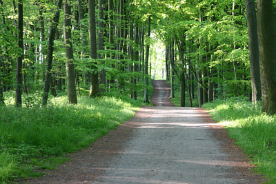

Das Seebad Koserow liegt an der schmalsten Stelle der Insel Usedom zwischen Ostsee und Achterwasser und ist eines der vier „Bernsteinbäder". Zudem ist es ein idealer Ausgangspunkt um von hier aus die anderen Seebäder oder die einmalige, schöne Naturlandschaft zu erkunden, da sich Koserow in der Inselmitte befindet.
Da man auf Usedom vielseitigen Erlebnis- bzw. Erholungsurlaub verleben kann, empfiehlt sich die Insel für Badelustige und Aktivurlauber gleichermaßen.
|  |
Zu nennen wäre der Rad-Wanderweg der in Koserow direkt an der höchsten Erhebung der Insel, dem Streckelsberg mit fast 60 m, und an den legendären Koserower Salzhütten, die im Jahr 1820 errichtet wurden, vorbeiführt.
Vom Streckelsberg kann man bei klarer Sicht die Insel Rügen in westlicher Richtung oder in südöstlicher Richtung die Insel Wollin sehen. Für einen unvergesslichen Badeurlaub spricht der gepflegte, feinsandige Strand, der sich von Peenemünde bis Swinemünde auf einer Länge von 45 km erstreckt und teilweise 60 m breit ist.
Am Achterwasser befinden sich diverse Wassersportmöglichkeiten.
In Koserow befindet sich auch die älteste Kirche auf Usedom. Eine im 13. Jahrhundert erbaute Feldsteinkirche, in ihr soll sich auch das Kreuz der sagenumwobenen Stadt Vineta befinden, welches als Strandgut angespült wurde. Der ehemalige Koserower Pfarrer Wilhelm Meinhold verfasste den im Jahr 1843 erschienenen Roman „Die Bernsteinhexe“. Welches das erstmals im Jahr 1347 als Cuzerowe urkundlich erwähnte Seebad noch etwas bekannter machte. Auch kulinarisch kommt jeder Gast auf seine Kosten. Dazu bieten sich traditionsreiche Restaurants und Fischerhütten auf der gesamten Insel an.